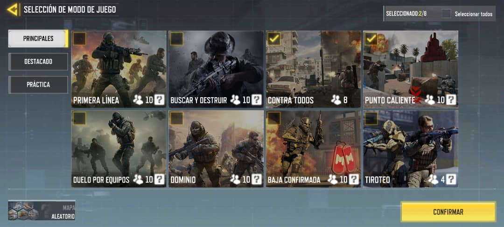

El modo multijugador en Call of Duty Mobile es una modalidad de juego en la que los jugadores pueden competir en partidas en línea contra otros jugadores de todo el mundo. En este modo, los jugadores forman equipos y se enfrentan en diferentes modos de juego, como Combate a Muerte por Equipos, Dominación, Buscar y Destruir, entre otros.
En el modo multijugador, los jugadores pueden personalizar sus loadouts, elegir entre una variedad de armas, accesorios y ventajas para adaptarse a su estilo de juego. Además, pueden desbloquear y utilizar rachas de bajas, como drones, misiles y helicópteros, para obtener ventajas tácticas durante la partida. El modo multijugador de Call of Duty Mobile ofrece una experiencia intensa y competitiva, donde los jugadores pueden demostrar sus habilidades, trabajar en equipo y competir por la victoria en emocionantes partidas en línea. Es una forma emocionante de disfrutar del juego con amigos y jugadores de todo el mundo.
En Call of Duty Mobile, existen varios mapas de multijugador que ofrecen diferentes entornos y desafíos para los jugadores. Algunos de los mapas más populares incluyen:
- Nuketown: Un clásico de la franquicia, Nuketown es un mapa pequeño y frenético que fomenta el combate cercano y rápido. Es ideal para partidas de Team Deathmatch y Domination.
- Crash: Este mapa urbano ofrece una combinación de espacios abiertos y áreas cerradas, lo que lo convierte en un escenario versátil para diferentes estilos de juego. Es perfecto para partidas de Search and Destroy y Hardpoint.
- Raid: Situado en una lujosa mansión, Raid es un mapa con múltiples niveles y rutas que permiten una variedad de estrategias. Es adecuado para partidas de Kill Confirmed y Capture the Flag.
- Standoff: Inspirado en un pueblo del oeste, Standoff es un mapa mediano con áreas abiertas y pasillos estrechos que favorecen el combate a larga distancia. Es ideal para partidas de Snipers Only y Free-for-All.
En cuanto a las modalidades de juego, Call of Duty Mobile ofrece una variedad de opciones para satisfacer los diferentes gustos de los jugadores. Algunas de las modalidades más comunes son:
- Team Deathmatch: Dos equipos compiten para alcanzar un número determinado de bajas antes que el otro equipo.
- Domination: Los equipos deben capturar y mantener puntos estratégicos en el mapa para acumular puntos.
- Search and Destroy: Un equipo debe plantar una bomba en uno de los objetivos mientras el otro equipo intenta evitarlo y desactivarla.
- Hardpoint: Los equipos compiten por controlar un punto móvil en el mapa para acumular tiempo y ganar la partida.
- Free-for-All: Cada jugador compite individualmente para alcanzar el número requerido de bajas y ser el primero en la tabla de posiciones.Estas modalidades ofrecen una variedad de experiencias de juego, desde combates intensos hasta estrategias tácticas, lo que permite a los jugadores disfrutar de diferentes estilos de juego en Call of Duty Mobile.
